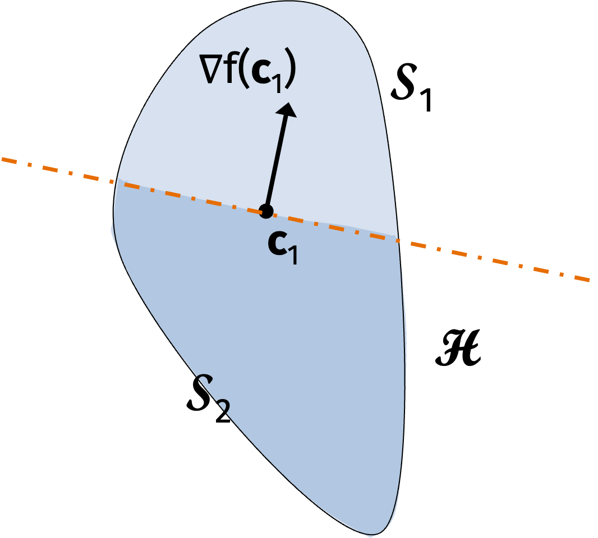

Ellipsoid Method
When we analyzed first order optimization, we were able to get a bound on the iteration complexity that did not depend on the dimension \(d\). However, each iteration required us to compute the gradient which is linear in the dimension.
Alternatively, we can get much better bounds on the number of oracle calls if we are willing to depend on the problem dimension. We actually can already see how to do this in the case of linear regression.
Linear Regression Example: Consider the function \(f(\mathbf{x}) = \frac12 \| \mathbf{Ax} - \mathbf{b} \|_2^2\). We know the gradient is given by \[\nabla f(\mathbf{x}) = \mathbf{A}^\top (\mathbf{Ax} - \mathbf{b}) = \mathbf{A}^\top \mathbf{Ax } - \mathbf{A}^\top \mathbf{b}\] and the optimal solution is given by \[ \mathbf{x}^* = (\mathbf{A}^\top \mathbf{A})^{-1} \mathbf{A}^\top \mathbf{b}. \]
We can find the optimal solution with \(d+1\) calls to the gradient oracle. For the first call, query \(\nabla f(\mathbf{0}) = - \mathbf{A}^\top \mathbf{b}\). Then for the remaining calls \(i \in \{1, \ldots, d\}\), query the standard basis vector \(\mathbf{e}_i\). We can then recover the \(i\)th column of \(\mathbf{A}^\top \mathbf{A}\) since \[ f(\mathbf{e}_i) + \mathbf{A}^\top \mathbf{b} = \mathbf{A}^\top \mathbf{A} \mathbf{e}_i. \]
Once we have \(\mathbf{A}^\top \mathbf{A}\), we can invert it (in \(O(d^3)\) time but without any oracle calls) and multiply it by \(\mathbf{A}^\top \mathbf{b}\) to recover the optimal solution \(\mathbf{x}^*\).
We will now analyze a general algorithm for convex optimization that depends on the dimension \(d\).
Dimension Dependent Convex Optimization: Consider a function \(f\) bounded between \([-B, B]\) on a convex set \(\mathcal{S}\). The center of gravity algorithm outputs a solution \(\hat{\mathbf{x}}\) such that \[ f(\hat{\mathbf{x}}) \leq f(\mathbf{x}^*) + \epsilon \] using \(O(d \log(B/\epsilon))\) calls to a function and gradient oracle for convex function \(f\).
One caveat of the algorithm is that we need some representation of \(\mathcal{S}\), not just a projection oracle.
The center of gravity algorithm is a natural cutting plane method. Interestingly, it was developed simultaneously on opposite sides of the iron curtain by A. Y. Levin in the Soviet Union and D. J. Newman in the United States both in 1975. The algorithm is not used in practice (we will discuss why) but the basic idea underlies many popular algorithms.
The center of gravity algorithm uses two basic ingredients. First, the center of gravity of a convex set \(\mathcal{S}\) is defined as \[ c = \frac{\int_{x \in \mathcal{S}} x \, dx}{\text{vol}(\mathcal{S})} = \frac{\int_{x \in \mathcal{S}} x \, dx}{\int_{x \in \mathcal{S}} 1 dx}. \] Second, for two convex sets \(\mathcal{A}\) and \(\mathcal{B}\), the intersection \(\mathcal{A} \cap \mathcal{B}\) is also convex. To see this, consider two points \(\mathbf{x}, \mathbf{y} \in \mathcal{A} \cap \mathcal{B}\). Then for any \(\lambda \in (0,1)\), we have \[ \lambda \mathbf{x} + (1-\lambda) \mathbf{y} \in \mathcal{A} \] because \(\mathbf{x,y}\) are in \(\mathcal{A}\) and \[ \lambda \mathbf{x} + (1-\lambda) \mathbf{y} \in \mathcal{B} \] because \(\mathbf{x,y}\) are in \(\mathcal{B}\).
The center of gravity algorithm is as follows. Instantiate \(\mathcal{S}_1 = \mathcal{S}\). For each step \(t=1, \ldots, T\), let \(\mathbf{c}_t\) be the center of gravity of \(\mathcal{S}_t\). We will then compute \(\nabla f(\mathbf{c}_t)\). Now define \[ \mathcal{H} = \{ \mathbf{x} \in \mathbb{R}^d : \langle \mathbf{x} - \mathbf{c}_t, \nabla f(\mathbf{c}_t) \rangle \leq 0 \}. \] Then update \(\mathcal{S}_{t+1} = \mathcal{S}_t \cap \mathcal{H}\). Finally, return the best solution \(\hat{\mathbf{x}} = \arg \min_{t} f(\mathbf{c}_t)\).
An iteration is described graphically below. The entire blue area is the convex set \(\mathcal{S}_1\). The center of gravity of \(\mathcal{S}_1\) is \(\mathbf{c}_1\). We compute the gradient of \(f\) with at \(\mathbf{c}_1\) and define the halfspace \(\mathcal{H}\) as everything in the direction of descent. Then the next convex set \(\mathcal{S}_2\) is the intersection of \(\mathcal{S}_1\) and \(\mathcal{H}\).

By convexity, \[ f(\mathbf{y}) \geq f(\mathbf{c}_t) + \langle \mathbf{y} - \mathbf{c}_t, \nabla f(\mathbf{c}_t) \rangle. \] If \(\mathbf{y} \notin \{ \mathcal{S}_t \cap \mathcal{H} \}\), then \(\langle \nabla f(\mathbf{c}_t), \mathbf{y} - \mathbf{c}_t \rangle\) is positive so \(f(\mathbf{y}) > f(\mathbf{c}_t)\).
Center of Gravity Convergence: Let \(f\) be a convex function with values in \([-B, B]\) on a convex set \(\mathcal{S}\). Then the center of gravity algorithm outputs a solution \(\hat{\mathbf{x}}\) after \(T\) iterations such that
\[\begin{align*} f(\hat{\mathbf{x}}) - f(\mathbf{x}^*) \leq 2B \left( 1- \frac1{e} \right)^{T/d} \leq 2B \exp \left( - \frac{T}{3d} \right). \end{align*}\] If we set \(T = 3d \log(B/\epsilon)\), then we have \(f(\hat{\mathbf{x}}) - f(\mathbf{x}^*) \leq \epsilon\).
We want to argue that, at every step of the algorithm, we “cut off” a large portion of the convex set we are searching over.
Grunbaum’s Theorem: For any convex set \(\mathcal{S}\) with center of gravity \(\mathbf{c}\) and any halfspace \(\mathcal{Z}= \{\mathbf{x} | \langle \mathbf{a}, \mathbf{x} - \mathbf{c} \rangle \leq 0 \}\), we have
\[ \frac{\text{vol}(\mathcal{S} \cap \mathcal{Z})}{\text{vol}(\mathcal{S})} \geq \frac{1}{e}. \]
The extreme case of the inequality is given by a triangle.
Let \(\mathcal{Z}\) be the complement of \(\mathcal{H}\) from the algorithm. Then, by Grunbaum’s Theorem, we cut off at least a \(1/\epsilon\) fraction of the convex body on every iteration. After \(t\) steps, we have \[ \text{vol}(\mathcal{S}_t) \leq \left(1-\frac1{\epsilon}\right)^t \text{vol}(\mathcal{S}). \]
To connect the result to the proof of the convergence bound, let \(\delta > 0\) be a small parameter to be set later. Now define \(\mathcal{S}^\delta = \{ (1-\delta) \mathbf{x}^* + \delta \mathbf{x} : \mathbf{x} \in \mathcal{S} \}\).
Claim: Every point \(\mathbf{y}\) in \(\mathcal{S}^\delta\) has good function value. To see this, observe that we have \[\begin{align*} f(\mathbf{y}) &= f((1-\delta) \mathbf{x}^* + \delta \mathbf{x}) \\ &\leq (1-\delta) f(\mathbf{x}^*) + \delta f(\mathbf{x}) \\ &\leq f(\mathbf{x}^*) - \delta f(\mathbf{x}^*) + \delta f(\mathbf{x}) \\ & \leq f(\mathbf{x}^*) + 2B\delta \end{align*}\] where the first inequality follows by Jensen’s inequality.
We also have that \(\text{vol}(\mathcal{S}^\delta) = \delta^d \text{vol}(\mathcal{S})\). Set \(\delta = (1-\frac1{e})^{T/d}\). After \(T\) steps, we have \[\begin{align*} \text{vol}(\mathcal{S}_t) \leq (1-\frac1{e})^T \text{vol}(\mathcal{S}). \end{align*}\]
Either:
\(\mathcal{S}_t\) exactly equals \(S^\delta\) in which case our next centroid gives error \(2B \delta\) or
we must have “chopped off” at least one point \(\mathbf{y} \in \mathcal{S}^\delta\) be the time we reach step \(T\).
If we have chopped off at least one point in \(\mathbf{y} \in \mathcal{S}^\delta\) by the time we reach step \(T\), then we have for some centroid \(t\), \(f(\mathbf{c}_t) < 2B \delta\).
To see this, observe that \[ 2 B \delta \geq f(\mathbf{y}) \geq f(\mathbf{c}_t) + \langle \nabla f(\mathbf{c}_t), \mathbf{y} - \mathbf{c}_t \rangle > f(\mathbf{c}_t) \] since we require that every point \(\mathcal{y}\) in the next convex set \(\mathcal{S}_{t+1}\) satisfies \(\langle \nabla f(\mathbf{c}_t), \mathbf{y} - \mathbf{c}_t \rangle \leq 0\).
In terms of gradient oracle complexity, the algorithm is essentially optimal. However, the algorithm is not widely used in practice. The reason is that computing the centroid is hard. In fact, computing the centroid is \(\#\)P-hard even when \(\mathcal{S}\) is an intersection of halfspaces.
Even if the problem isn’t hard for the starting convex body \(\mathcal{S}\), it likely will become hard for the convex body \(\mathcal{S} \cap \mathcal{H}_1 \cap \mathcal{H}_2 \cap \ldots \cap \mathcal{H}_T\).
We will now discuss how to obtain a computationally efficient version of the center of gravity algorithm called the ellipsoid method. The ellipsoid method is most famous for giving the first polynomial time algorithm for linear programming.
Ellipsoid Method
We’ll consider a slightly more general problem. Given a convex set \(\mathcal{K}\) via access to a separation oracle \(S_\mathcal{K}\) for the set, we want to determine if \(\mathcal{K}\) is empty or, otherwise, return any p oint \(\mathbf{x} \in \mathcal{K}\).
Formally, the separation oracle returns \[ S_\mathcal{K}(\mathbf{y}) = \begin{cases} \emptyset & \text{if } \mathbf{y} \in \mathcal{K} \\ \text{separating hyperplane} \mathcal{H} & \text{if } \mathbf{y} \notin \mathcal{K}. \end{cases} \]
The hyperplane is parameterized by a normal vector \(\mathbf{a}\) and offset \(c\) so \(\mathcal{H} = \{ \mathbf{x} : \langle \mathbf{a}, \mathbf{x} \rangle \leq c \}\).

Let’s consider an example.
Separation Oracle Example: How would we implement a separation oracle for a polytope \(\{ \mathbf{x} : \mathbf{Ax} \geq \mathbf{b} \}\)? Here, \(\mathbf{x} \in \mathbb{R}^d\), \(\mathbf{A} \in \mathbb{R}^{m \times d}\), and \(\mathbf{b} \in \mathbb{R}^m\).
The polytope is specified by a sequence of equations \[\begin{align*} \mathbf{a}_1^\top \mathbf{x} &\geq b_1 \\ \mathbf{a}_2^\top \mathbf{x} &\geq b_2 \\ \vdots \\ \mathbf{a}_m^\top \mathbf{x} &\geq b_m \end{align*}\] where \(\mathbf{a}_i\) is the \(i\)th row of \(\mathbf{A}\) and \(b_i\) is the \(i\)th entry of \(\mathbf{b}\). We can check each equation to see if it is satisfied by \(\mathbf{x}\) in \(O(d)\) time per equation. If all the equations are satisfied, we return \(\emptyset\). If there is some equation \(i\) that is not satisfied, we return the corresponding hyperplane \(\mathcal{H} = \{ \mathbf{x} : \mathbf{a}_i^\top \mathbf{x} = b_i \}\).
Recall our original problem is to find \[ \min_\mathbf{x} f(\mathbf{x}) \text{ subject to } \mathbf{x} \in \mathcal{K}. \]

How can we reduce the original problem to determining if a convex set \(\mathcal{K}\) is empty or not?
The answer is binary search! For a convex function \(f\), the set \(\{ \mathbf{x} : f(\mathbf{x}) \leq c \}\) is convex. In addition, we can get a separation oracle via the gradient of \(f\). We start with an upper and lower bound \(u\) and \(l\) on the optimal solution. We will check if the convex set \[ \mathcal{S} \cap \{ \mathbf{x} : f(\mathbf{x}) \leq (u+l)/2 \} \] contains a point. We will update \(u = (u+l)/2\) if it does and \(l = (u+l)/2\) if it does not. We continue until \(u-l \leq \epsilon\).
The goal of the ellipsoid method is to determine whether a convex set \(\mathcal{K}\) is empty or not given a separation oracle. We will assume that:
\(\mathcal{K}\) is bounded by a ball of radius \(R\) centered at some point \(\mathbf{c}_R\).
If \(\mathcal{K}\) is nonempty, then it contains a ball of radius \(r\) centered at some point \(\mathbf{c}_r\) for some \(r < R\).
We can apply the solution to the original problem with the following observation: For a convex function \(f\) such that \(\| \nabla f(\mathbf{x}) \|_2 \leq G\) for all \(\mathbf{x}\), it can be checked that the convex set \(\{\mathbf{x} : f(\mathbf{x}) \leq \epsilon \}\) contains a ball ofo radius \(\epsilon/G\).
We’ll now sketch the ellipsoid method. The ellipsoid method is an iterative algorithm that is similar to the center of gravity algorithm. We will:
Check if the center \(\mathbf{c}_R\) of the ball with radius \(R\) is in the current ellipsoid is in \(\mathcal{K}\).
If it is, then we are done.
If it is not, then we cut the search space in half using the separating hyperplane.
The key insight of the ellipsoid method is that we can approximate the new search region with a shape that we can easily compute the centroid of. Specifically, we’ll use an ellipse! The advantage is that we can compute the centroid of an ellipse efficiently. The disadvantage is that the volume of the space we’re searching over does not decrease as quickly.

In this way, we’ll produce a sequence of ellipses that always contain \(\mathcal{K}\) and decrease in volume. Once we get to an ellipse with less than the ball with center \(\mathbf{c}_r\) and radius \(r\), we know that \(\mathcal{K}\) must be empty.
An ellipse is a convex set of the form: \[ \{ \mathbf{ x : \| \mathbf{A(x-c)} \|_2^2 \leq \alpha \} } \] for some constant \(\alpha\) and matrix \(\mathbf{A}\). The center of mass is \(\mathbf{c}\).
Often, we re-parameterize to say that the ellipse is \[ \{\mathbf{x} : (\mathbf{x} - \mathbf{c})^\top \mathbf{Q}^{-1} (\mathbf{x} - \mathbf{c}) \leq 1 \}. \]
Luckily, there is a closed form solution for the equation of the smallest ellipse containing a given half-ellipse. That is, let ellipse \(\mathbf{E}_i\) have parameters \(\mathbf{Q}_i\) and \(\mathbf{c}_i\). Consider the half-ellipse: \[ \mathbf{E}_i \cap \{ \mathbf{x} : \langle \mathbf{a}_i, \mathbf{x} \rangle \leq \langle \mathbf{a}_i, \mathbf{c}_i \rangle \}. \] Then the next ellipse \(\mathbf{E}_{i+1}\) is the ellipse with parameters \[\begin{align*} \mathbf{Q}_{i+1} &= \frac{d^2}{d^2-1} \left( \mathbf{Q}_i - \frac2{d+1} \mathbf{hh}^\top \right) \\ \mathbf{c}_{i+1} = \mathbf{c}_i - \frac1{n+1}\mathbf{h} \end{align*}\] where \(\mathbf{h} = \sqrt{\mathbf{a}_i^\top \mathbf{Q}_i \mathbf{a}_i} \cdot \mathbf{a}_i\). Importantly, computing the new ellipse takes \(O(d^2)\) time.
The next claim describes how the volume of the next ellipse decreases.
Claim: \[ \text{vol}(\mathbf{E}_{i+1}) \leq \left( 1- \frac1{2d} \right) \text{vol}(\mathbf{E}_i). \]
We can prove the claim via a reduction to the “isotropic case”. You can find a proof here.
The result is not as good as the \((1-\frac1{\epsilon})\) constant factor volume reduction we got from the center of gravity algorithm.
However, after \(O(d)\) iterations, we reduce the volume by a constant. In total, we require \(O(d^2 \log(R/r))\) iterations to solve the problem. Formally, if we run for \(T= d^2 \log(B/r)\) steps, then \[ \text{vol}(\mathbf{E}_T) \leq \left( \frac{r}{R} \right)^{d^2} \text{vol}(\mathbf{E}_1). \] Then, since the volume \(\text{vol}(\mathbf{E}_T)\) is less than the volume of the ball with radius \(r\), we know that \(\mathcal{K}\) is empty by our assumption.
We’ll see an application of the ellipsoid method to solving linear programs.